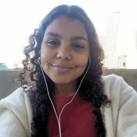
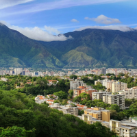

Valeria Quintero
About Me
My name is Valeria I was born in Caracas, Venezuela, where I currently live with my family. I am a BYU Pathway student, pursuing a degree in Web Development. I love finding what's broken and making it better. Currently, I'm working remotely in healthcare operations and have previous experience as a functional QA intern for a SAAS fintech company, with the dream of becoming a UX/UI Designer. In my free time, I love arts, painting, and exploring new creative outlets.

Caracas, Venezuela
Caracas is the capital and largest city of Venezuela, nestled in a valley of the Caribbean mountain range. It is known for its vibrant cultural scene, beautiful El Ávila National Park, and rich history. The city is a hub for arts, music, and gastronomy, reflecting the diverse heritage of the country. Venezuela is also home to the world's highest uninterrupted waterfall, Angel Falls.
